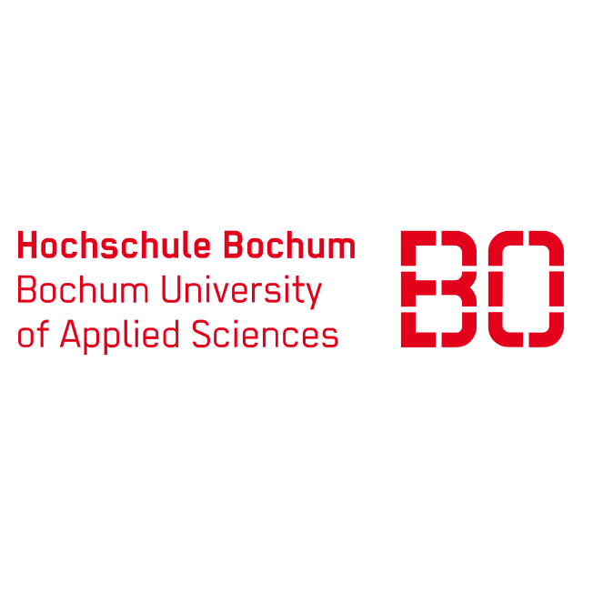
We create Open Educational Resources for Spatial Data Infrastructures that are modular, published under a permissive CC-BY-SA 4.0 license and can be used both in classroom settings and in self-learning environments. The materials are available from our GitHub repositories and (soon) via the ORCA.nrw and OpenRUB platforms. Videos can be streamed and downloaded individually from TIB-AV.
Modules
Our collection of modules is a mix of German and English language materials, depending on our own needs. More modules are under development.
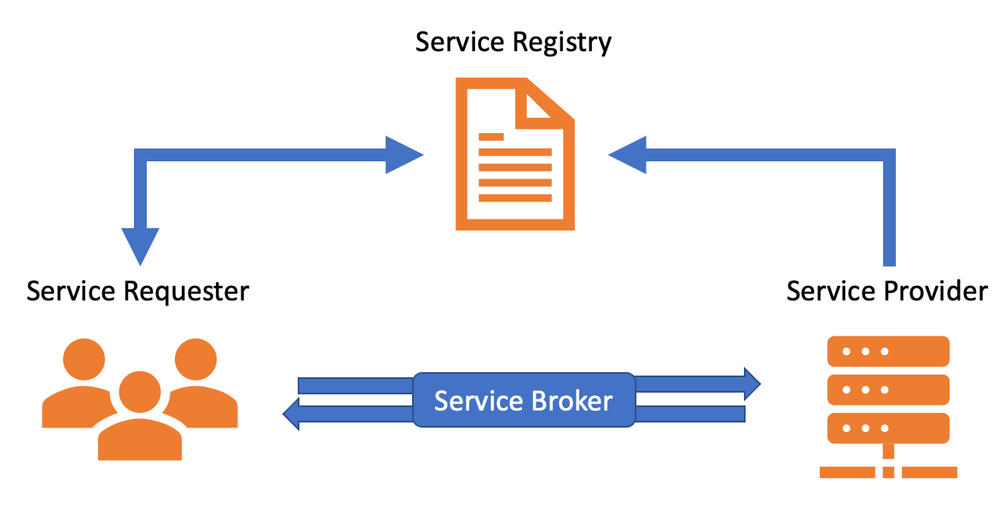
Geospatial Web Services
Interaktives H5-Modul und Videos zum Thema Geospatial Web Services.
 GitHub |
ORCA
(soon)
| OpenRUB (soon)
GitHub |
ORCA
(soon)
| OpenRUB (soon)
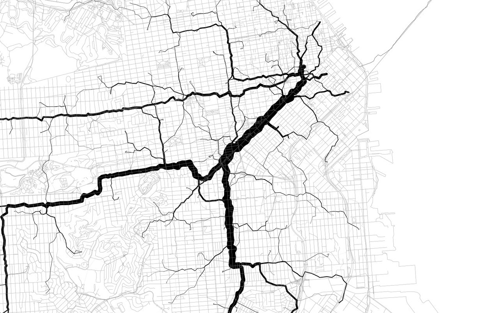
Einführung in die Geoinformatik
Sammlung von interaktiven H5P-Modulen zu verschiedenen Grundlagenthemen der Geoinformatik.
GitHub |
ORCA
(soon)
| OpenRUB (soon)

Knowledge Graphs
Interaktives H5P-Modul zum Thema Knowledge Graphs, Linked Open Data und Semantic Web.
GitHub |
ORCA
(soon)
| OpenRUB (soon)
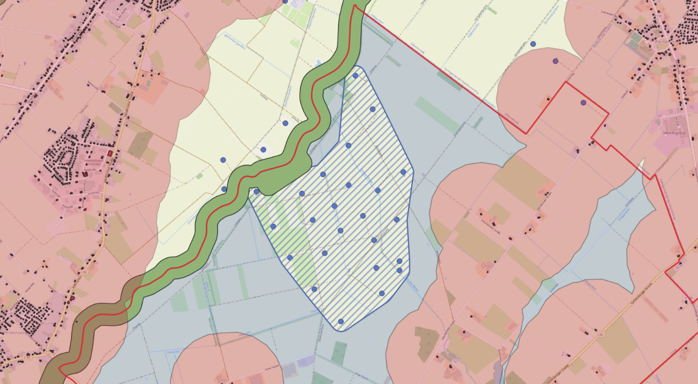
SDI for Wind Farm Planning
Real-world use case of planning the extension of a wind farm in Northern Germany using Spatial Data Infrastructure.

Fernerkundung
Sammlung von interaktiven H5P-Modulen zur Einführung in die Fernerkundung.
GitHub |
ORCA
(soon)
| OpenRUB (soon)
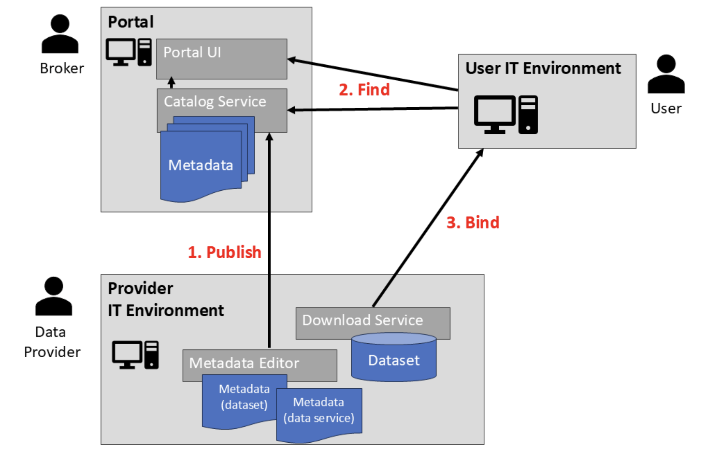
Metadata Access via OGC CSW
Technical tutorial on how to access and use metadata in an SDI.
{kind=link}
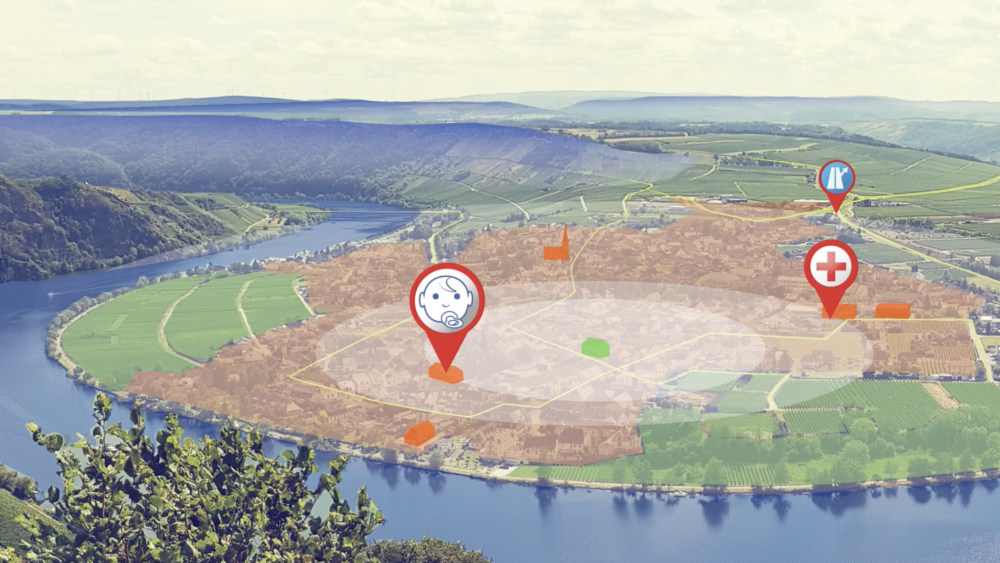
Das AAA-Datenmodell
Videobasierte Einführung in das AAA-Datenmodell.
GitHub |
ORCA
(soon)
| OpenRUB (soon)
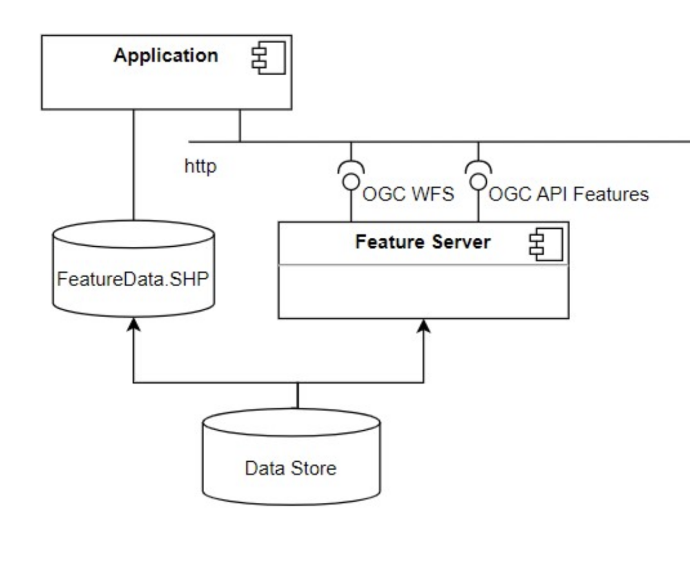
Data Access via OGC API Features
Tutorial on how to access geospatial data using web services that implement the OGC API Features interface.

DCAT
Tutorial on the Data Catalog Vocabulary (DCAT).

Spatial Data Streaming
OER on analyzing IoT air quality data streams using Kafka and Jupyter Notebooks.
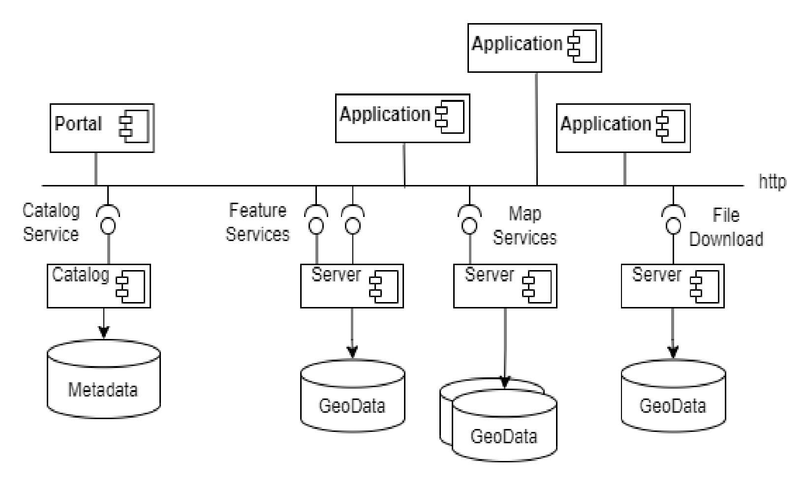
INSPIRE View and Download Services
Tutorial on using the view and download services of the Infrastructure for Spatial Information in Europe.
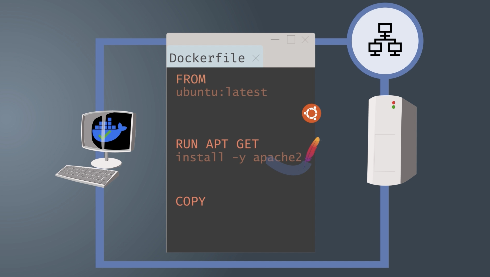
Docker
Short course on using Docker to provide and scale GIS applications.
GitHub | ORCA
(soon)
| OpenRUB (soon)
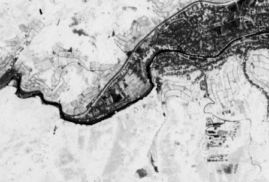
Copernicus and OpenEO
Technical tutorial on the Copernicus data infrastructure and OpenEO.
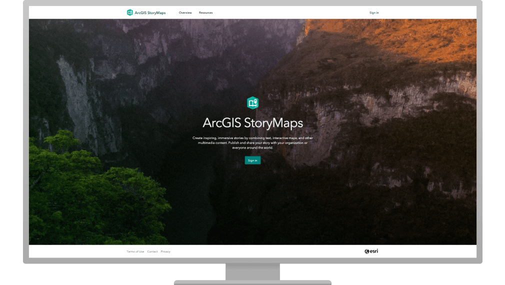
ArcGIS Story Map
H5P-Modul zur Erstellung einer „Story Map“ ArcGIS Online.
GitHub |
ORCA
(soon)
| OpenRUB (soon)
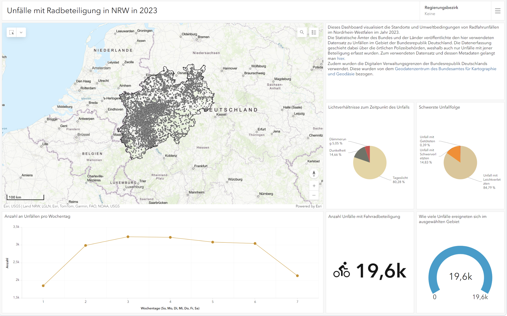
ArcGIS Online Dashboards
H5P-Modul zur Erstellung eines ArcGIS Online Dashboards.
GitHub |
ORCA
(soon)
| OpenRUB (soon)